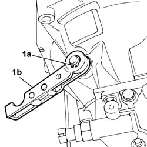
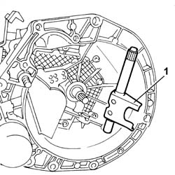

1820A26 thrust bearing linkage - r + r with gearbox removed
- Path
- Procedures > 18 CLUTCH UNIT > 1820 CLUTCH RELEASE CONTROLS > 1820A CLUTCH RELEASE MECHANICAL CONTROL > 1820A26 thrust bearing linkage - r + r with gearbox removed
- Kind
- repair procedure (removal / refitting; the operation number is the code)
- Applies to
- all engines; all production periods
- Interactive page
- https://sloeber94.github.io/elrnDB-fPnd/en/#/2752655
Applies to: all engines; all production periods
 Removing
Removing
 Refitting
Refitting1820A30 thrust bearing - r + r with gearbox removed
1. Open and remove the circlip (1a) and remove the thrust bearing control lever (1b).

Applies to: engines: 1.1, 1.2 8v; all production periods; only with equipment: Smart gearbox
Removing
Refitting1820A30 thrust bearing - r + r with gearbox removed
1. Release and remove the fork shaft and keep the upper and lower bushes.

Applies to: all engines; all production periods
1. Release and remove the fork shaft and keep the upper and lower bushes.
Applies to: engines: 1.1, 1.2 8v; all production periods; only with equipment: Smart gearbox
Refitting
RemovingCheck the condition of the removed components.
Replace the bushes, if there is too much play on the fork shaft.
Refit the fork control shaft.
Applies to: all engines; all production periods
Refitting
RemovingCheck the condition of the removed components.
Replace the bushes, if there is too much play on the fork shaft.
Refit the fork control shaft.
Position the thrust bearing control lever and secure it to the fork shaft using the special circlip.